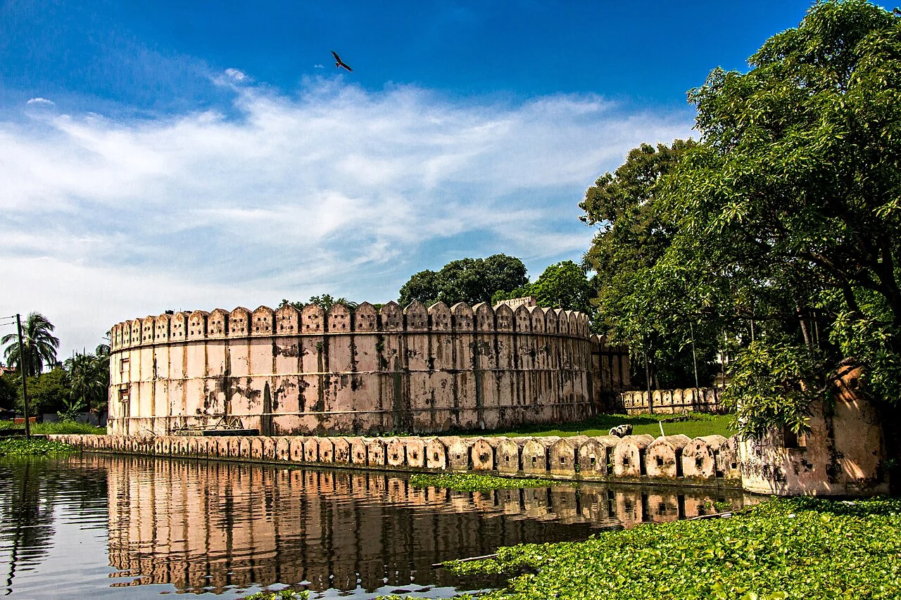
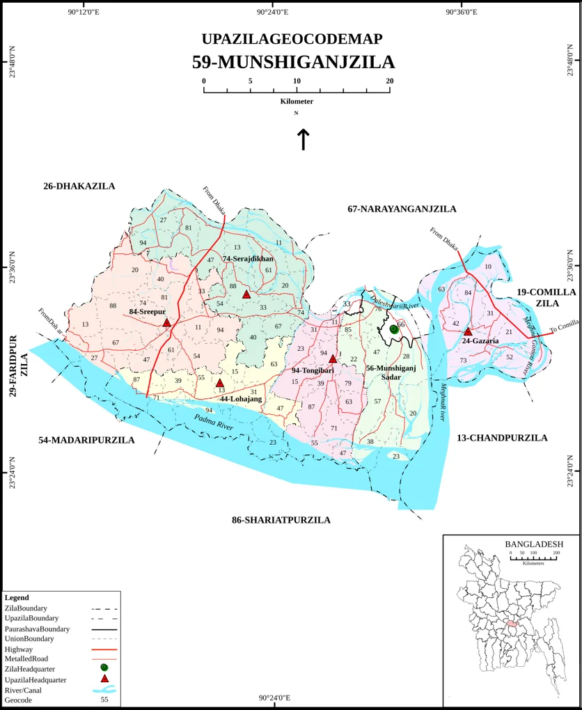
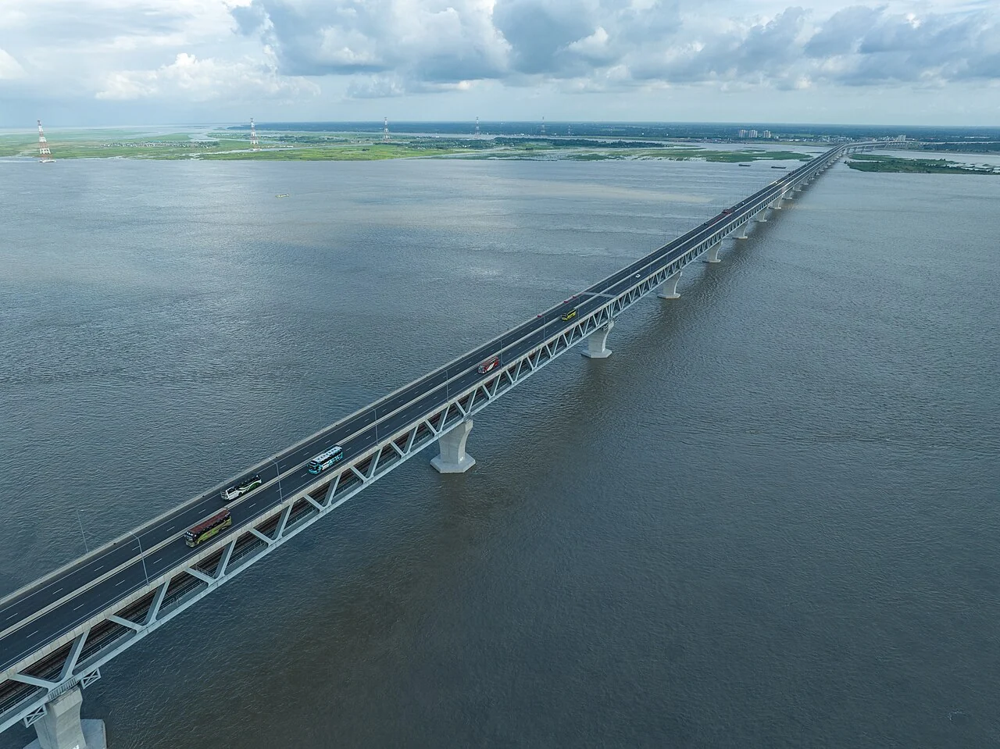

From Dhaka
For Munshiganj town, use directions via Muktarpur and confirm current bus options around Gulistan. For Mawa, look for options on the Dhaka–Mawa corridor. These are different approaches to the district.
Route from Dhaka
DHAKA DIVISION, BANGLADESH
Echoes of Bikrampur
Follow the rivers into a district of brick forts, buried monasteries and villages that still carry the name of Bikrampur.
THE DISTRICT
South of Dhaka, Munshiganj occupies a river landscape shaped by the Padma, Meghna and Dhaleshwari. Inscriptions name historical Vikramapura as a royal seat. Excavations, religious buildings and homes give that history a physical presence today.
Explore the six upazilas, from the wetland around Sreenagar to the Meghna crossings of Gazaria. Each offers a different view of the district and its relationship with water.
Find your bearings on the mapSelect an upazila to see what’s there.

HISTORY
From the royal grants of Vikramapura to the archaeology still being uncovered today.
THE PLACE DIRECTORY
Find a fort, a village temple, a museum or a stretch of riverbank.
RIVERS & LANDSCAPES
Follow the rivers, wetlands and village landscapes through the seasons.

MAWA & THE PADMA
Padma Bridge connects Mawa in Munshiganj with Jajira in Shariatpur. Road traffic runs above the railway, and the fixed crossing has changed how journeys between Dhaka and the southwest pass through Mawa.
PEOPLE & CULTURE
Meet the people, crafts and food traditions that connect the region’s past to everyday life.
EXPLORE MAP
Choose an upazila or category, then select a pin for a closer look and directions.
PHOTOGRAPHY
Brickwork, changing water and daily life, photographed across the district.
DID YOU KNOW?
Open a question to learn more about the district.
TRAVEL GUIDE
Choose an outing by what you want to see, then check routes and access before you go.
For Munshiganj town, use directions via Muktarpur and confirm current bus options around Gulistan. For Mawa, look for options on the Dhaka–Mawa corridor. These are different approaches to the district.
Route from DhakaUse Muktarpur as a waypoint for the road approach to Munshiganj town. Check current traffic and local connections before leaving. For Gazaria, plan the Meghna-side approach as a separate trip.
Route from NarayanganjCooler dry months suit walking and architecture. For wetland photography, check water levels and access in the rainy season. Old compounds, excavation sites and river landings can have steps, mud and uneven ground. Ask ahead about step-free access.
Ask before photographing worshippers, homes or workshops. Stay on marked paths around excavations and confirm river conditions before a boat outing. Opening arrangements, boat access and transport services can change.